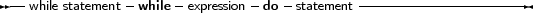

A while statement is used to execute a statement as long as a certain condition holds. In difference with the repeat loop, this may imply that the statement is never executed.
The prototype syntax of the While..do statement is
_________________________________________________________________________________________________________While statements

___________________________________________________________________
This will execute Statement as long as Expression evaluates toTrue. Since Expression is evaluated before the execution of Statement, it is possible that Statement isn’t executed at all. Statement can be a compound statement.
Be aware of the fact that the boolean expression Expression will be short-cut evaluated by default, meaning that the evaluation will be stopped at the point where the outcome is known with certainty.
The following are valid while statements:
I := I+2;
while i<=100 do begin WriteLn (’I =’,i); I := I+2; end; X := X/2; while x>=10e-3 do X := X/2; |
They correspond to the example loops for the repeat statements.
If the statement is a compound statement, then the Break and Continue reserved words can be used to jump to the end or just after the end of the While statement.